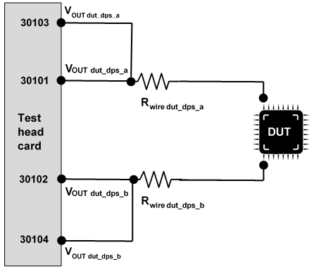
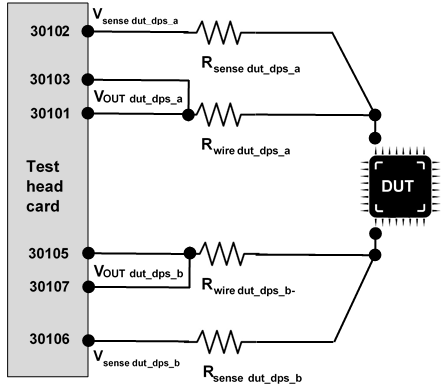

PS5000 ganging
Pin Scale 5000 channels support ganging of neighboring channels for the dcVI instrument model. Use a neighboring channel to provide a higher output current for a DUT pin.
Basic principle
You can use a channel and its neighboring channel to provide a higher output current for a DUT pin. This parallel connection of power supply channels is called ganging of channels.
For the concept of neighboring channel and the sequence of channel pairs, refer to PS5000 differential pin pair assignment.
The connection of the ganged channels has to be implemented on the DUT board as shown below.

The Pin Scale 5000 channels are ground referenced and therefore do not support the serial connection for higher supply voltages, which is also known as stacking.
Rules for configuring ganging of PS5000 channels
- Ganging of PS5000 channels is supported for each differential pin pair.
-
The combination of remote sensing and ganging is supported within groups of four channels:
- Supported channel groups are 1 ... 4, 5 ... 8, 9 ... 12, and 13 ... 16.
- Ganged channels correspond to the differential pairs.
- The following configurations are supported:
Ganged channels Sense channel Ganged channels Sense channel 1-3 2 2-4 3 5-7 6 6-8 7 9-11 10 10-12 11 13-15 14 14-16 15
For an example, refer to Ganging and remote sensing on PS5000 below or to section Ganging and remote sensing in topic PS5000 ganging of the Test head cards reference.
Recommendations for wiring of ganged channels
- For applications that need ganged and high-speed digital I/O capability on the same DUT pin, relays can be required to separate the ganged channels. This applies also for the sense trace if remote sensing is used for ganged channels.
- For the combination of ganging and remote sensing, route the sense trace in parallel and close to the force trace.
Ganging and remote sensing on Pin Scale 5000
Ganged channels can be remotely sensed. The rules for ganging are applicable as outlined above.
The sense line is the first channel of the next channel pair, ranked in ascending order. The second channel of this next channel pair can be used as a regular channel.

You can find detailed configuration rules for the combination of remote sensing and ganging in the Rules for configuring ganging of PS5000 channels section above.
Functional changes
- Introduced in SmarTest 8.4.0